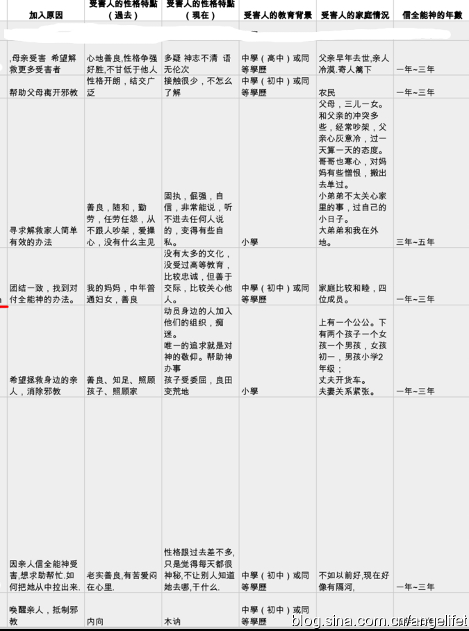
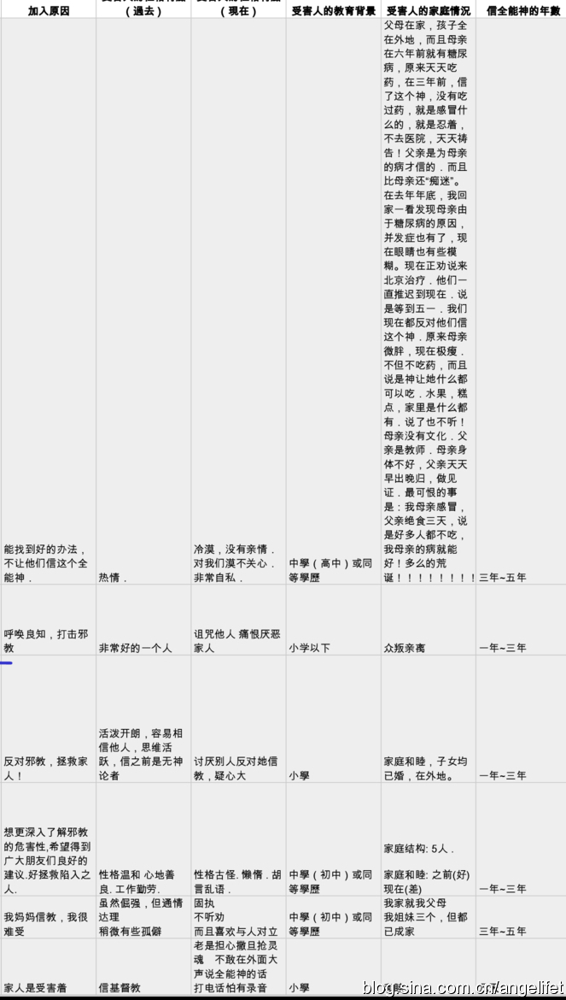
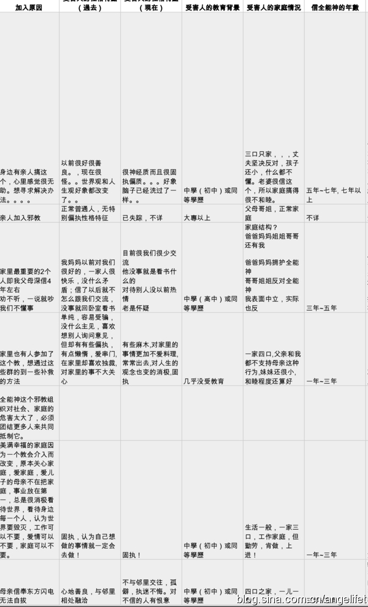
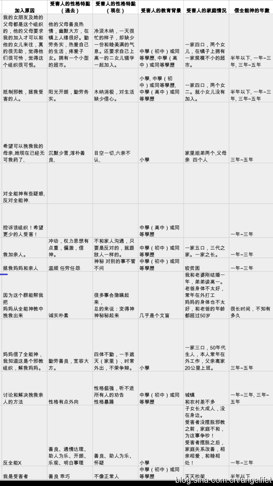
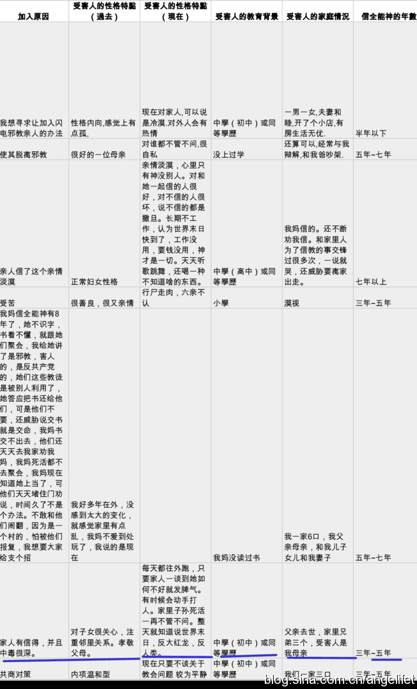

邪教受害者的心声
事实上，这样被东方闪电所破坏的家庭在中国至少有300万之多，因为曾经有人统计仅邪教东方闪电的信徒大约有300万人，每个信徒背后就是一个被破坏的家庭，或者是好几个。数目目前无法统计，这些也只是目前我所掌握到的一部分信息。对于受害者一个心理咨询师是有义务为其保密相关信息的，出于公益心的考虑，我相信这些可以对外向社会和想要了解问题严重性的朋友公开，因为你们有权知道发生了什么，然后希望你们能考虑一下应该为这些人做一些什么？因为他们也是你们的朋友亲人。需要你们伸出援助之手。
相反如果我们不作为，这个数目会不断的增加，直到最后也能影响到整个社会每个人的生活。翻开历史，太平天国等就是很好的例子。
这些信息是09年2月～至今的数据，本来是有我在google doc上做的调查表，后来由于GFW的出现google的退出，发生了很多事情，这项服务基本上等同虚设，但是还能有网友在2010年陆续上网填写信息，虽然不多，却让我颇为感动，实际上本人在09年就试图组织一个反邪教联盟，当时做了一些工作，这算是当时的工作成果之一。后来因为找不到很好的解决方法，再加上和部分情绪化比较强的网友有方向和看法上的分歧，再加上有很多困扰我的事情，迫于无法解决问题的压力，于是退出，自寻出路去了。
而现在当我又开始在做这些事情的时候，外部的环境改变的不多：工作中的阻力、受害者的冷漠、政府的漠然无视、大量的需要支援的对象、感到势单力孤，被现实浇的心寒的时候，这些给我很大的希望，让我看到中国的弱势群体还是有希望的，他们能够突破重重难关填写调查表，还有在努力的不认命的灵魂，这些人是中国的希望，为什么我不能再坚持一下，把这个事情做个了断呢？至少要告诉他们该往哪里走。该如何寻求答案。哪里是陷阱，哪里是险滩。
于是乎，我就又开始为这个目标振作起来。敢问路在何方？路在脚下。
    